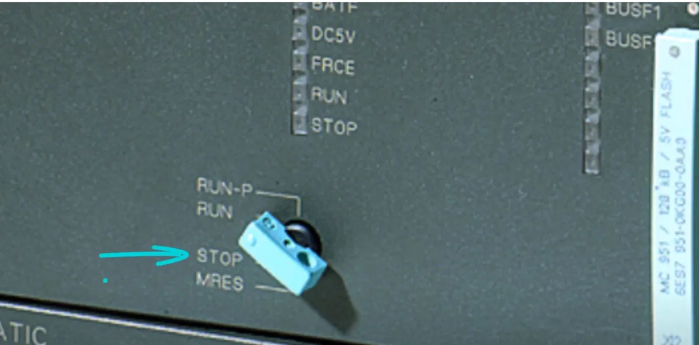
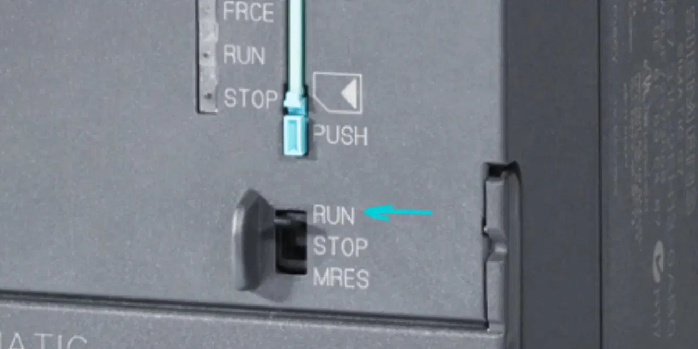

A chave seletora de modo
As CPUs da família Siemens S7 possuem um elemento físico fundamental para a operação do sistema: a chave seletora de modo. Esse componente permite ao operador definir manualmente em qual estado operacional a CPU se encontrará, determinando diretamente o comportamento do controlador e sua relação com o programa em execução.
A chave seletora é um recurso essencial tanto para a operação cotidiana quanto para atividades de manutenção, programação e diagnóstico. Por meio dela, é possível iniciar ou interromper a execução do programa, controlar permissões de comunicação com o computador de programação e realizar o apagamento da memória do controlador quando necessário.

Modos de operação disponíveis
Dependendo da geração da CPU utilizada, podem estar disponíveis até quatro modos de operação selecionáveis diretamente pela chave: RUN-P, RUN, STOP e MRES. A presença ou ausência do modo RUN-P é uma das principais diferenças entre CPUs antigas e novas da família S7.
Modo RUN-P
O modo RUN-P, ou Run-Program, é exclusivo das CPUs de geração mais antiga da família S7. Nesse modo, a CPU executa continuamente o programa de controle armazenado em sua memória, monitora as entradas do processo e atua sobre as saídas conforme a lógica programada.
A principal característica que diferencia o RUN-P dos demais modos de execução é a permissão bidirecional de comunicação com o computador de programação. O técnico pode realizar download, transferindo um novo programa ou alterações do computador para a CPU, mesmo com o sistema em operação. Também pode realizar upload, copiando o programa armazenado na CPU para o computador a qualquer momento.
Essa flexibilidade torna o RUN-P especialmente útil durante comissionamento, colocação em operação e ajustes finos realizados enquanto o processo continua funcionando. Porém, é necessário cuidado: alterações no programa durante a execução podem impactar diretamente o processo em andamento. Por isso, o técnico precisa ter pleno conhecimento das modificações realizadas e dos riscos associados à intervenção.
Modo RUN
O modo RUN também coloca a CPU em execução contínua do programa, com comportamento operacional equivalente ao RUN-P no que diz respeito ao processamento da lógica de controle. A diferença fundamental, nas CPUs antigas, está na restrição de comunicação com o computador de programação.
Em CPUs antigas, com a chave em RUN, o upload é permitido: o programa existente na CPU pode ser copiado para o computador. No entanto, o download não é permitido: não é possível enviar um novo programa ou alterações para a CPU enquanto ela permanece nesse modo. Para realizar download, seria necessário alterar a chave para RUN-P ou STOP, conforme o procedimento adotado.
Nas CPUs de geração antiga, o RUN oferece uma camada adicional de proteção contra alterações acidentais no programa durante a operação. Já nas CPUs de nova geração da família S7, o modo RUN-P foi eliminado. O modo RUN dessas CPUs incorpora as permissões de download e upload, funcionando na prática como o antigo RUN-P. Essa mudança simplifica a operação e reduz a possibilidade de erro causada pela seleção incorreta do modo.

Modo STOP
No modo STOP, a CPU interrompe completamente a execução do programa de controle. As saídas são desativadas ou mantidas no estado seguro definido na configuração do sistema, e nenhuma lógica de controle é processada. Esse modo é utilizado quando o processo deve ser impedido de executar comandos automáticos.
O STOP é aplicado antes de realizar o download de um novo programa em CPUs antigas que não permitem download em RUN, durante manutenção em dispositivos de campo conectados ao CLP, em situações de diagnóstico de falhas e na configuração inicial do sistema antes da primeira carga de programa. O comportamento do STOP é equivalente em CPUs antigas e novas.
Modo MRES
O modo MRES, ou Memory Reset, é uma posição especial da chave seletora utilizada para realizar o apagamento completo da memória da CPU. Ao executar o procedimento de reset de memória, o programa armazenado é removido e a CPU retorna a uma condição semelhante ao estado inicial, como se ainda não tivesse recebido o projeto de controle.
O MRES não é um modo de operação contínuo, mas sim uma função ativada por um procedimento específico. No Siemens S7-300, por exemplo, o procedimento típico envolve posicionar a chave em STOP, manter a chave em MRES por alguns segundos até o LED STOP piscar, soltar a chave para que ela retorne a STOP e, em seguida, acionar novamente MRES dentro do tempo indicado pelo procedimento. O término do reset é indicado pelo comportamento do LED STOP.
O MRES é utilizado na preparação da CPU para receber um novo projeto do zero, na resolução de erros críticos de memória que impedem a operação normal e na reutilização do hardware em outra aplicação. Assim como o STOP, o MRES opera de forma equivalente em CPUs antigas e novas da família S7.
Diferenças entre CPUs antigas e novas
Em CPUs antigas, o modo RUN-P está disponível e permite execução do programa com download e upload. O modo RUN executa o programa, mas permite apenas upload. O modo STOP interrompe a execução, e o modo MRES realiza o reset de memória. Em CPUs novas, o RUN-P não está mais disponível. O modo RUN passa a concentrar as permissões de download e upload, enquanto STOP e MRES mantêm funções equivalentes.
A principal mudança de filosofia entre as gerações é a unificação das permissões de comunicação no modo RUN das CPUs novas. Isso torna o processo de programação e atualização mais simples e menos suscetível a erro operacional, pois elimina a necessidade de escolher entre RUN e RUN-P.
Identificação visual da chave seletora
Além das diferenças funcionais, as chaves seletoras de CPUs antigas e novas também se distinguem visualmente. Nas CPUs antigas, a chave geralmente possui formato rotativo com encaixe para chave de fenda ou dispositivo similar, e apresenta as posições RUN-P, RUN, STOP e MRES marcadas no painel. A presença da posição RUN-P é o indicador visual mais imediato de que se trata de uma CPU de geração anterior.
Nas CPUs novas, a chave possui formato mais compacto, geralmente do tipo alavanca ou botão rotativo menor, e exibe apenas RUN, STOP e MRES. A ausência da marcação RUN-P confirma que se trata de uma CPU de nova geração, na qual o modo RUN já incorpora as permissões de comunicação antes associadas ao RUN-P. Saber identificar o tipo de chave presente na CPU é uma habilidade prática importante, pois define os procedimentos corretos de operação e programação.
Exemplo prático: atualização de programa durante a operação
Considere uma planta química que opera continuamente durante 24 horas por dia. O engenheiro de automação precisa atualizar a lógica de controle de um CLP Siemens S7-300 sem interromper o processo produtivo. O CLP utiliza uma CPU 315-2 DP de geração antiga, com chave seletora RUN-P, RUN, STOP e MRES.
Nessa situação, o modo STOP interromperia o processo e, portanto, seria inaceitável. O modo RUN permitiria apenas upload, impedindo o envio das modificações para a CPU. O modo RUN-P permite download e upload com o processo em execução, sendo a opção correta para esse cenário. O técnico verifica que a chave está em RUN, altera para RUN-P, conecta o notebook ao CLP via MPI ou Profibus, abre o projeto no STEP 7 e realiza o download das modificações.
Após o download, o processo deve ser monitorado por alguns minutos para confirmar que as alterações foram aplicadas corretamente e que o sistema permanece estável. Como medida de segurança operacional, a chave pode ser retornada para RUN, bloqueando novos downloads acidentais em CPUs antigas. Em uma CPU de nova geração, o mesmo resultado seria obtido mantendo a chave no modo RUN, pois as novas CPUs unificaram as permissões de comunicação nesse modo.
Conclusão
Compreender os modos RUN-P, RUN, STOP e MRES é essencial para operar, programar e diagnosticar CPUs Siemens S7 com segurança. A chave seletora não é apenas um detalhe físico do painel: ela define se a CPU executa o programa, se aceita download, se permite upload, se interrompe o controle ou se realiza reset completo de memória. A diferença entre CPUs antigas e novas deve ser reconhecida em campo para evitar paradas indevidas, downloads bloqueados ou alterações acidentais durante a operação.